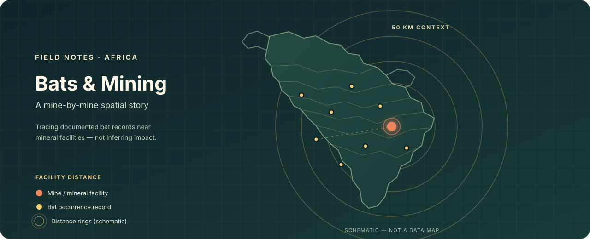

African Bats & Mining
Explore the documented point records of African bats near mineral facilities. Move through facility pages, inspect species cards, and compare facility distances with selectable bat-centered buffer radii.
Bat points are occurrence localities, not verified roosts. The 1–50 km analysis distances are not foraging ranges and do not imply ecological impact or disease risk.